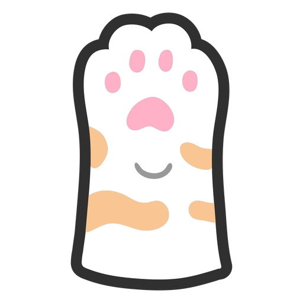

Hi, I'm Boris Schechtmann! 
Welcome! I’m a dedicated full-stack developer with a knack for sleek designs and efficient, purr-formant code. I’m all about combining front-end elegance with back-end strength to create websites that are as responsive as they are robust. From intuitive interfaces to scalable systems, I tackle every project with precision and a bit of feline curiosity.
When I’m not debugging, you’ll likely find me batting at dangling USB cables, enjoying a cozy nap on the keyboard, or sipping my favorite blend of catnip tea. Let’s connect, and together, we’ll make the web a paw-some place!